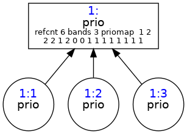

QOS¶
Mikrotik¶
Por hacer
Revisar
Se hace el marcado de las conexiones, que funciona como un tunel, en donde los
paquetes sin importar el origen o el destino. Luego de marcar la conexión se
marcan los paquetes que puede ser diferenciado o no, por ejemplo se puede marcar
los paquetes tcp con una etiqueta y los de udp con otra. En Winbox ir a
ip--->Firewall--->Mangle en el + se agrega la regla que quieras. Para
conexión se pone en Src. Address la ip o rango de ip desde donde viene y en
Action se pone mark connection y abajo el nombre correspondiente.
Luego se agrega para marcar los paquetes en la misma tabla mangle, pero no
necesita de poner ninguna ip de origen o destino, sino que hay que ponerle en
Connection Mark la marca de conexión que creaste antes. Luego en Action
pones mark packet y su nombre, recordando de tener destildada la opción de
Passthrough para que cuando ejecute la acción de marcado de paquete salga de
una y no siga reccorriendo todas las reglas de la tabla. Lo óptimo es poner a
continuación de la regla de marcado de conexión la de marcado de paquete.
Para hacer las colas ir a Queues--->Queue Tree agregar en el +. En Parent
podes elegir si lo hacés en una interfaz determinada o se le pone global si
querés que se aplique en todas. En el caso que hagas un arbol para la interfaz
eth0, cuando se hace la de global aparte, no incluye a esta interfaz. Se debe
poner:
Name: Nombre de la cola, por ejemplo Download.
Parent: donde se va a realizar la cola, puede ser la interfaz o si es una rama se pone por ej Download.
Packet Mark: la marca que tiene el paquete, se creó en la parte de mangle.
Queue Type: el tipo de cola, default es una pfifo.
Priority: valor de prioridad, 1 es el más alto y 8 el más bajo.
Limit at: indica el ancho de banda asegurado.
Max limit: el ancho de banda máximo que puede utilizar, que proviene de cuando el resto de las colas no están usando la totalidad del ancho de banda otorgado.
Linux¶
Ejemplo HTB¶
Vamos a poner una cola HTB en el root, y vamos a ver como va quedando paso a paso con tcviz. Las qdiscs son rectángulos y las clases son elipses.
tc qdisc add dev enp4s0 parent root handle 1:0 htb default 10
default 10 indica que por defecto los paquetes sin clasificar se envían a la
clase 1:10.
Creamos las dos clases
tc class add dev enp4s0 parent 1: classid 1:10 htb rate 7Mbit

tc class add dev enp4s0 parent 1: classid 1:20 htb rate 3Mbit
Vamos a usar dos clases, entonces sería util poner dos filtros para que cada uno
lleve a una clase. Vamos a usar filtros handle que se basan en marcas
realizadas por iptables. Tener en cuenta que el gráfico muestra al handle
1010 en hexadecimal como 0x3f2.
tc filter add dev enp4s0 protocol ip parent 1:0 prio 1 handle 1010 fw flowid 1:10
Los paquetes que lleguen con la marca 1010 se enviarán a la clase 1:10.
Agregamos el otro filtro. Tener en cuenta que el gráfico muestra al handle
1020 en hexadecimal como 0x3fc.
tc filter add dev enp4s0 protocol ip parent 1:0 prio 1 handle 1020 fw flowid 1:20
Después se pone una qdisc debajo de cada clase. No se les pone una handle específicamente entonces toman cualquier número.
tc qdisc add dev enp4s0 parent 1:10 sfq perturb 10
tc qdisc add dev enp4s0 parent 1:20 pfifo

En resumen estos son los comandos que se pusieron:
tc qdisc add dev enp4s0 parent root handle 1:0 htb default 10
tc class add dev enp4s0 parent 1: classid 1:10 htb rate 7Mbit
tc class add dev enp4s0 parent 1: classid 1:20 htb rate 3Mbit
tc filter add dev enp4s0 protocol ip parent 1:0 prio 1 handle 1010 fw flowid 1:10
tc filter add dev enp4s0 protocol ip parent 1:0 prio 1 handle 1020 fw flowid 1:20
tc qdisc add dev enp4s0 parent 1:10 sfq perturb 10
tc qdisc add dev enp4s0 parent 1:20 pfifo
Con eso ya se configuró todo el árbol de tc, ahora falta marcar los paquetes
con iptables para que tomen las handles 1010 o 1020. Este es un
ejemplo de marcado que depende de la IP de destino:
iptables -t mangle -A FORWARD -d 10.0.0.10 -j MARK --set-mark 1010
iptables -t mangle -A FORWARD -d 10.0.0.11 -j MARK --set-mark 1020
Ejemplo PRIO¶
Vamos a poner una cola PRIO en el root, y vamos a ver como va quedando paso a paso con tcviz. Las qdiscs son rectángulos y las clases son elipses.
tc qdisc add dev enp4s0 root handle 1: prio
A diferencia de HTB en donde hay que definir las clases, PRIO ya viene con tres clases.
Al igual que antes vamos definiendo los filtros, acá pongo los tres filtros en una en vez de mostrarlo en tres pasos:
tc filter add dev enp4s0 protocol ip parent 1:0 prio 1 handle 121 fw flowid 1:1
tc filter add dev enp4s0 protocol ip parent 1:0 prio 1 handle 122 fw flowid 1:2
tc filter add dev enp4s0 protocol ip parent 1:0 prio 1 handle 123 fw flowid 1:3
Ahora pongo colas cualquiera en cada clase:
tc qdisc add dev enp4s0 parent 1:1 pfifo
tc qdisc add dev enp4s0 parent 1:2 sfq perturb 10
tc qdisc add dev enp4s0 parent 1:3 pfifo
Finalmente hay que marcar los paquetes con iptables, como no tengo ganas adapto el ejemplo anterior a este caso:
iptables -t mangle -A FORWARD -d 10.0.0.10 -j MARK --set-mark 121
iptables -t mangle -A FORWARD -d 10.0.0.11 -j MARK --set-mark 122
iptables -t mangle -A FORWARD -d 10.0.0.12 -j MARK --set-mark 123
NETEM¶
Para el uso de netem en linux hay varios casos. Por ejemplo:
tc qdisc add dev eth0 root netem delay 100ms
tc qdisc add dev eth0 root netem delay 100ms 50ms
tc qdisc add dev eth0 root netem loss 0.1%
tc qdisc add dev eth0 root netem duplicate 1%
tc qdisc add dev eth0 root netem corrupt 0.1%
Donde:
delay {retardo}: Agrega solamente retardo.delay {retardo} {jitter}: Agrega retardo y jitter.loss {perdida}%: Porcentaje de périda de paquetes.duplicate {duplicados}%: Porcentaje de paquetes duplicados.corrupt {cantidad}%: Corrompe los paquetes agregándoles bits erróneos.
Recordar que en vez de add se debe usar change para modificar, o
delete para borrar reglas.
Comandos varios¶
Monitorear las colas asociadas a una interfaz:
tc -s qdisc ls dev enp4s0
PFIFO¶
tc qdisc add dev enp4s0 root pfifo
Token Bucket Filter (TBF)¶
tc qdisc add dev enp4s0 root tbf rate xkbit latency xms burst 1540
Donde:
rate: Velocidad de la interfaz.latency: Período máximo de tiempo que puede pasar un paquete en el TBF.burst: Tamaño del bucket en bytes.
Stochastic Fairness Queueing (SFQ)¶
tc qdisc add dev xxx root sfq perturb 10
Donde:
perturb: Reconfigura la cola cada X segundos y es opcional. Nosotros usamos 10 segundos
CBQ¶
Es la más complicada, justamente por eso no se usa. Ejemplo:
tc qdisc add dev xxx root handle 1:0 cbq bandwidth xMbit avpkt 1000 cell 8
tc class add dev xxx parent 1:0 classid 1:1 cbq bandwidth xMbit rate yMbit
weight zMbit prio 8 allot 1514 cell 8 maxburst 20 avpkt 1000 bounded
HTB¶
Funciona igual que CBQ pero es mucho menos complicado. Tiene los mismos parámetros que TBF.
Marcado de paquetes¶
Hay dos formas de marcar paquetes:
fw: Clasifica el tráfico basándose en marcas realizadas a los paquetes por iptables. Por ejemplo:
tc filter add dev enp4s0 protocol ip parent 1:0 prio 1 handle 123 fw flowid 1:4
Adhiere un filtro a la interfaz
enp4s0para el protocolo IP, donde la disciplina de cola (qdisc) padre es la 1:0. Se especifica que se usa el filtrofwy que los paquetes marcados con123los envíe a la cola:4. Para marcar los paquetes se debe utilizariptables.u32: Análiza de los campos de la cabecera de los protocolos. Por ejemplo:
tc filter add dev enp4s0 protocol ip parent 1:0 prio 1 u32 match ip dport 80 0xffff flowid 1:4
Adhiere un filtro a la interfaz
enp4s0para el protocolo ip, donde la qdisc padre es la1:0. Se usau32y se marca que los paquetes que tengan el puerto 80 como destino deben ser enviados a la cola:4.